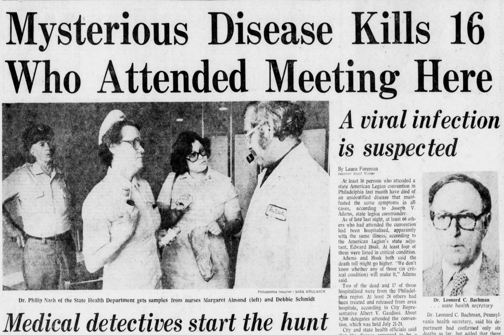
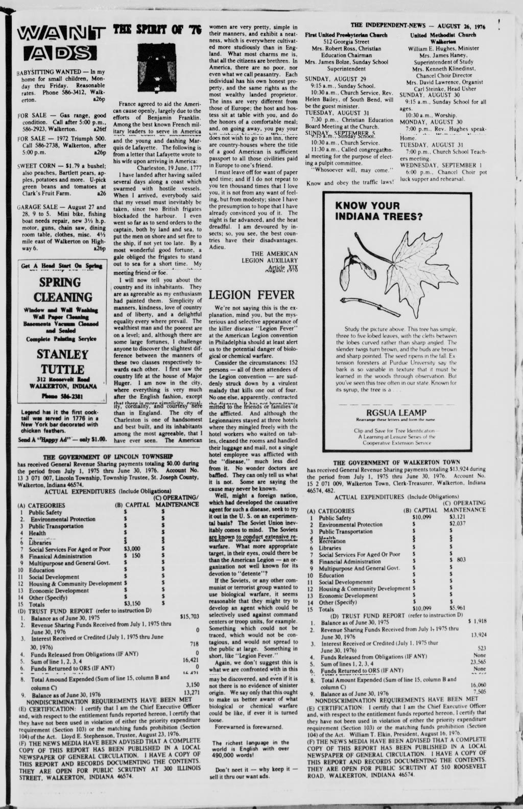

HN-709 · August 26, 1976 · Medicine & Public Health > Epidemics, Pandemics & Infectious Diseases > Emerging diseases
Source: Independent-News, p. 15 — original page; CDC, 1976 outbreak follow-up and identification.
Report: An editorial described an alarming, apparently non-transmitted illness following a Philadelphia American Legion convention, claimed 152 sickened with approximately a quarter dying, and floated a possible connection to biological or chemical warfare while conceding it was not claiming an explanation.
Assessment: Unverified speculation from a period before the cause was known. CDC investigators subsequently identified an infectious bacterial cause—later named Legionella pneumophila—of the 1976 outbreak. Neither the unusual epidemiology nor the editorial's thought experiment is evidence of a deliberate attack.
Authentic images retrieved from The Philadelphia Inquirer (inquirer.com history archive) and Hoosier State Chronicles (Indiana State Library). Article crops are located using the archive's own OCR word coordinates and rendered at native crop resolution; article clips are assembled from the archive's own article-block images; page images marked "archive tiles" are stitched from the archive's own tiled page service at its 256-px tile cap; page images marked "issue PDF" are single pages rasterised from the archive's own issue PDF, with the page chosen by matching the headline against the PDF's text layer; page scans are reduced-size access renditions. No images were generated, mocked, or retouched.


Status: Archive images acquired
Authentic archive-owned image renditions were retrieved for this record and are displayed above. The source-acquisition manifest preserves the original pre-acquisition feasibility assessment.
URL (preserved verbatim): https://newspapers.library.in.gov/?a=d&d=INDN19760826.1.15
Saved research report: Historical_Newspaper_Event_Research_703-727_2026-10-23.md
Evidence note: A newspaper report means a historical publication made a claim; it does not establish that claim as fact. Contemporary reporting is separated from later scholarly context and our own assessment.